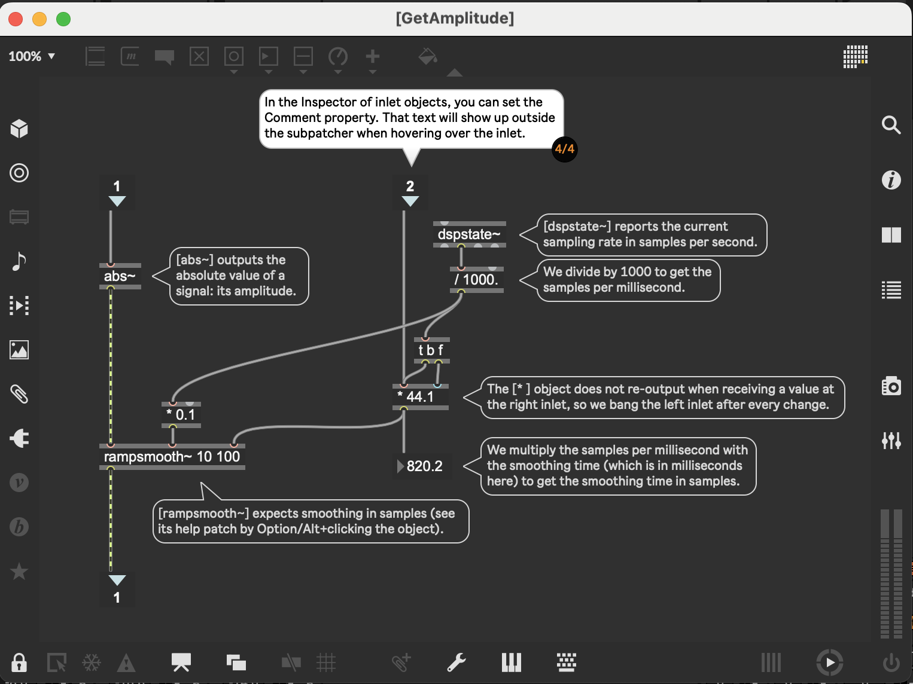

Ableton/Packs/building-max-devices/02_M4L_Intro
Building Max Devices/Part 2 - Introduction
Page 2/9 - Ableton/Max for Live/MIDI Effect/Note Doubler in "Track 1 Max Patching"
- so many Nerd/Safaris await
c74/max/Time Value Syntax
- Here is a listing of the note and tick values associated with common note durations. Note value abbreviations that can be used in Max to specify time are in bold.
1nd - Dotted whole note - 2880 ticks
1n - Whole note - 1920 ticks
1nt - Whole note triplet - 1280 ticks
2nd - Dotted half note - 1440 ticks
2n - Half note - 960 ticks
2nt - Half note triplet - 640 ticks
4nd - Dotted quarter note - 720 ticks
4n - Quarter note - 480 ticks
4nt - Quarter note triplet - 320 ticks
8nd - Dotted eighth note - 360 ticks
8n - Eighth note - 240 ticks
8nt - Eighth note triplet - 160 ticks
16nd - Dotted sixteenth note - 180 ticks
16n - Sixteenth note - 120 ticks
16nt - Sixteenth note triplet - 80 ticks
32nd - Dotted thirty-second note - 90 ticks
32n - thirty-second note - 60 ticks
32nt - thirty-second-note triplet - 40 ticks
64nd - Dotted sixty-fourth note - 45 ticks
64n - Sixty-fourth note - 30 ticks
128n - One-hundred-twenty-eighth note - 15 ticks
- Here is a listing of the note and tick values associated with common note durations. Note value abbreviations that can be used in Max to specify time are in bold.
- this is crazy, I can still see the ableton animation of the Delay UI component even though the patcher is open for editing
- I see there is a "Preview is On" button in the lower ribbon of the patcher
- I turned on c74/max/Patcher/While Operating/Enable so I could add some extra number signs to see the delay velocity
- I think I get the idea of this now, c74/max/midiin -> c74/max/midiout is already happening, but in addition to that, it's going to c74/max/midiparse, which outputs a list which has note, poly pressure, control change, pgm change, aftertouch, pitch bend, midi channel
- from looking at the help for c74/max/midiparse I see that "the rightmost outlet of the midiparse object converts MIDI input into properly formatted midievent messages for use with the
vst~object - that's reminding me that I saw lots of #YouTube videos about making VST wrappers with Ableton/Max for Live - c74/max/unpack is used to unpack the list into outlets. I don't know why there are only two, since midiparse has so many outlets
- from looking at the help for c74/max/midiparse I see that "the rightmost outlet of the midiparse object converts MIDI input into properly formatted midievent messages for use with the
- so many Nerd/Safaris await
Page 3/9 - Making Ableton/Max for Live/MIDI Effect/Octave/Adder - Track 2 MIDI Effects
- cool effect.
this is using Ableton/Instrument/Electric/E-Piano MKI Simple
- See 26.3 Electric Ableton/Manual/26/03
- it's neat because it has a diagram of piano action with configurable values
- In the patcher, I figured out that I could hover over the outlets of c74/max/midiparse to see what they corresponded to; very helpful
the octave copies number slider goes into a "trigger bang i bang" object, what's this?
logbook- c74/max/obj/trigger
- but what's the
iintrigger bang i bang? it's anint.
how does the
p AddOctaveswork?logbook- I think this is a c74/max/obj/patcher
- why can't I get help on the objects in the AddOctaves patcher object?
logbook- there was a lock icon in the lower left and when I clicked that, I unlocked it, and then I could access help for the items. I also searched the max Help and found that the Options menu has a Help in Locked Patches, which let me get help on the objects even without unlocking it.
Max Basic Tutorial 1: Hello - Max 8 Documentation
- - Unlocking the patcher
- When you first opened this patcher, it was in a "locked" state – meaning that you cannot edit any of the objects or text in the window. When a patcher is locked, the intention is that it be used as a program. Since the power of Max is that we can edit and manipulate these programs to do whatever we like, let's unlock this patch and do some editing.
- Choose Edit from the View menu. You will see several changes in the patcher. First, the boxes surrounding the comment boxes are revealed (we told you they were there). Secondly, the message and comment boxes show inlets that were hidden in the locked state. In addition, a port on the bottom of the message box is revealed; this is an outlet. Finally, many more of the icons at the bottom of the patcher window are now available for our use.
- In addition to the visible changes, we are now free to edit the contents of the window. Double-click inside the object box in the upper-right that says print; the text is selected, and you can type another object name into that box. Type "metro" (without the quotes), and click outside the object box to complete the edit. We have now changed the function of that object - it is now a metro object. You will see the object box change size, and the number of inlets and outlets will change as the function of the object has changed. We learn Max by building up a vocabulary of objects, including how they connect to other objects and what messages they understand and transmit.
- Double-click inside the message box on the right. Change the message text to anything (for example, type in the word "anything"), then click outside the box to accept the change. Note that changing the message text does not change the inlets or outlets, since only the contents (but not the function) of the message box has changed.
- Finally, double-click inside the comment box and change its text. Since the comment box has no function other than adding text to the patch, you are free to put in any text that pleases you.
- - Interacting with a locked patcher
- Lock the patch by unchecking Edit in the View menu. Let’s see what happens when we click on each of the box types. In the top-center of the patch, click on the object box (which we changed from print to metro) – nothing happens. Clicking on the message box directly below it, however, acts like a button – you can see the text get pushed back when you click it.
- Click on the Max console icon on the right-hand side of the window to open the sidebar. On the left side of our patcher, there are three message boxes connected (with lines called patchcords) to a print object . Click on each of these message boxes in turn, then look at the Max Console; you will see that the contents of the message boxes we clicked are displayed there. This was a result of clicking on the message boxes: they generated a message (the content of the message box) and sent it down the patchcord to the print object. The print object takes any message it receives in its inlet and displays it in the Max Console.
- ok, so this has two c74/max/obj/inlets
- the left inlet has a c74/max/obj/trigger
t b ithe bang goes to c74/max/obj/uzi, the int goes to c74/max/obj/int right inlet, which "stores" the number ... how does this work?c74/max/obj/uzi uzi Reference - Max 8 Documentation
- what it does according to the comment is "re-send the note number the specified number of times"
- here we have
uzi 1, so in theory it will re-send the incoming midi note 1 time? I don't think so, the point of this is to use the specified number of octaves - after unlocking the patcher, I hover over uzi and the inlets are "start shooting bangs" (left) and "number of bangs to shoot" (right)
- zooming into uzi help
- Outputs a specified number of bang messages quickly. uzi is designed for rapid-fire output of a large number of bang messages.
- When I click start bang on uzi help, I see what's going on
c74/max/obj/int - int Reference - Max 8 Documentation
- so the midi note gets stored by the int object FIRST because the right to left order of
t b iguarantees that - then the bang initiates the uzi, which, in the case of 2 octaves, outputs two bangs to that int to recall that midi note
- the rightmost outlet of uzi outputs the index, e.g. 1 and then 2
- that's sent to a c74/max/obj/- which subtracts 1, making it go from 0 to 1 instead of 1 to 2
- then they send that to c74/max/obj/times to multiply each additional octave into 12 notes
- that gets added to the note.
- so the result is that if the incoming midi note was 60 (C4), then first we'd get 60 + 0, then we'd get 60 + (1*12) = 72, so we'd get two note on messages
- ok, I understand this now.
how does the rest of Octave Adder work?
logbook- we take the velocity of the incoming note and send it to c74/max/obj/pack, which makes it so then we have midi note and velocity as a list
- how does c74/max/obj/flush interact with the rest of the patch?
logbook- what does c74/max/obj/flush do? flush Reference - Max 8 Documentation
logbookOutputs note-off messages for any held note-ons. flush keeps track of all note-ons passed through it, and produces note-off messages for any held notes when it receives a bang message.

- when
packsends a midi note number and a velocity list to the first inlet offlush, flush keeps track of that. WhenOctave Copiesinlet goes intotrigger bang i bang, the very "first" thing it does is send a bang out the rightmost outlet, which triggers the flush from the prior notes. Then it sends the int into thep AddOctaves.
- how does flush interact with the
packafter it?logbook - how does the c74/max/obj/midiformat work with c74/max/obj/midiout?
logbook
- what does c74/max/obj/flush do? flush Reference - Max 8 Documentation
Page 4/9 - Making Ableton/Max for Live/Instrument/Basic Saw - Track 3 Instruments
logbook- Key Objects
- left side (sound generation)
- c74/max/obj/mtof gen_dsp_mtof Reference - Max 8 Documentation
- c74/msp/obj/saw~ saw~ Reference - Max 8 Documentation
- right side (adsr decay knob)
- c74/M4L/obj/live.dial live.dial Reference - Max 8 Documentation
- c74/max/obj/append append Reference - Max 8 Documentation
- c74/msp/obj/line~ line~ Reference - Max 8 Documentation
- Linear signal ramp generator
Examples
Messages
float
- In left inlet: The number is the target value, to be arrived at in the time specified by the number in the right inlet. If no time has been specified since the last target value, the time is considered to be 0 and the output signal jumps immediately to the target value.
- In right inlet: The number is the time, in milliseconds, in which the output signal will arrive at the target value.
- in the patch, we end up having the decay value and then 5 at the end, and
line~linearly interpolates over 5 milliseconds between the current delay value and the next delay value
- c74/msp/obj/adsr~ adsr~ Reference - Max 8 Documentation
- The
adsr~object is an ADSR Attack-Decay-Sustain-Release signal controllable by signals. Examples
- The
adsr~object uses the Max c74/max/Time Value Syntax; envelope times can be specified in either fixed or tempo-relative formats. - in the Basic Saw patch, we are given
adsr~ 5 100 0.1 100- what does that mean? - The
line~is going both to the decay and the release time over 5 milliseconds
- The
- c74/m4l/obj/plugout~ the signal outlet
- left side (sound generation)
- How does
- Key Objects
5/9 Making Ableton/Max for Live/Audio Effect/Noise Adder - Track 4 Audio Effects
logbookMaking Audio Effects
- c74/M4L/Ref/Live Audio Effects Creating Audio Effect Devices - Max 8 Documentation
Modifying Audio
Looking at the Patch
- Diagram showing patch structure
- Steps in the Patch:
- (1/4) Object properties can be changed in the Inspector (View menu > Inspector Window). Notice the adapted Range and Unit Style properties for this dial.
- ok, I can see that by searching for "range" in the "all" category, that the parameter "Range/Enum" is set to
-70. 6.which means it takes float values from -70.0 to 6.0, which seems like okay values for Gain. Also, by searching for unit style, I see that parameter Loudness (dB) is selected; it's cool that max/msp has a built-in unit for loudness.
- ok, I can see that by searching for "range" in the "all" category, that the parameter "Range/Enum" is set to
- (2/4) We are only displaying a positive amplitude, so the range of this scope could be changed from the default
-1 to 1to0 to 1. Find the Range property under the All tab. - (3/4) Have a look at the contents of this subpatcher by locking the patch and double-clicking the subpatcher.
- (4/4) Inspect the p GetAmplitude section and observe how it processes the signal amplitude.
- (1/4) Object properties can be changed in the Inspector (View menu > Inspector Window). Notice the adapted Range and Unit Style properties for this dial.
- Steps in the Patch:
Objects
- Left
- Right
- c74/M4L/obj/live.dial "Detect HP" in
Hz - c74/max/obj/prepend frequency
- c74/max/obj/filterdesign filterdesign Reference - Max 8 Documentation
filterdesign @response highpass- creates a c74/max/obj/dict with a specification for a filter that can be realized by several other objects including the c74/msp/obj/cascade~ object
dict Reference - Max 8 Documentation
- create named dictionaries, clone existing dictionaries, and query existing dictionaries to access their data.
- - Arguments
- - name
Displayed: symbol - Optional
- Name to be associated with this dictionary. If no argument is given, then a unique name will be generated.
- - filename
Displayed: symbol - Optional
- Name of a JSON or YAML file to be imported into this dictionary on load.
- what does
@response highpassdo here?response [symbol]
Filter response shape Possible values:
'lowpass' ( Low frequencies pass through, high frequencies are attenuated )
'highpass' ( High frequencies pass through, low frequencies are attenuated )
'bandpass' ( A band of frequencies pass through, low and high frequencies are attenuated )
'bandstop' ( A band of frequencies are attenuated, low and high frequencies pass through )
- how does the input from the Detect HP in
Hzmake it into thefilterdesign?logbookfrequency [2 floats]
Filter cutoff frequencies specified in units defined by the units attribute. For lowpass and highpass filters a single frequency will be used to define the cutoff. For bandpass and bandstop filters two frequencies are required.- I can see that the filterdesign inspector > Behavior > Frequency Units > herz is selected
- creates a c74/max/obj/dict with a specification for a filter that can be realized by several other objects including the c74/msp/obj/cascade~ object
c74/msp/obj/cascade~ cascade~ Reference - Max 8 Documentation
- Cascaded series of biquad filters
- filter an input signal using a series of biquad filters.
Examples
Messages
- list
- - Arguments
- The filter coefficients can be provided as a list in the left or right inlet. The coefficients should be in sets of five, each set corresponding to a second-order section or biquad. The first five coefficients in the list are used for the first second-order section in the series, the next five for the second, and so on.
- signal
in this example
p GetAmplitudepatcher
Description of the Patch
- The patch calculates and applies smoothing to an audio signal's amplitude.
- Key Elements:
- The
abs~object determines the absolute value of the signal. dspstate~is used to fetch the current sampling rate for conversion.- Smoothing is applied by converting millisecond timing to sample-based timing using
rampsmooth~.- So if we move the Decay knob, then it ends up determining the rightmost inlet of rampsmooth in terms of the number of samples for that decay time
- Example: 48000 hz sample rate, smoothing time of 17.1ms
- DOING This means that if we increase the decay, that takes MUCH longer to take effect, relative to decreasing the decay - why would they choose to do that?
logbook- what we are doing is detecting the incoming volume - and smoothing it over that number of samples.
- rampsmooth is a bit like the volume / RMS gauges on the old fashioned amplifiers. it's quick to rise, slow to fall. we want to detect amplitude eagerly, and let it "glow" a certain number of milliseconds or samples, kind of like an ember that a fire is casting into the night, so it can be detected and used in a way that's more perceptible to humans (if we didn't use rampsmooth, the signal would just be a different value on a sample by sample basis)
- so
rampsmooth~is totally key to how this thing whole patch works; it's the secret sauce. We are applying a certain number of milliseconds of noise to the "tip" of the high hat, in a way determined byrampsmooth~
- So if we move the Decay knob, then it ends up determining the rightmost inlet of rampsmooth in terms of the number of samples for that decay time
- The
Objects
c74/msp/obj/abs~ abs~ Reference - Max 8 Documentation
c74/msp/obj/dspstate~ dspstate~ Reference - Max 8 Documentation
c74/msp/obj/rampsmooth~ rampsmooth~ Reference - Max 8 Documentation
- Expects smoothing in samples.
- Converts millisecond-based smoothing to samples for processing.

Arguments
ramp-up-samples [int]
Optional
Number of samples for ramp-upramp-down-samples [int]
Optional
Number of samples for ramp-down- what exactly is ramp up and ramp down here?
- In c74/msp/obj/rampsmooth~, ramp up and ramp down determine how a signal is smoothed over time.
- Ramp Up: Smooths rising changes in the signal over a specified number of samples. For example, a jump from 0 to 1 is gradually smoothed over the ramp-up time.
- Ramp Down: Smooths falling changes in the signal over a specified number of samples. For example, a drop from 1 to 0 is smoothed over the ramp-down time.
- Key Points:
- Practical Use:
- In c74/msp/obj/rampsmooth~, ramp up and ramp down determine how a signal is smoothed over time.
Notes
- c74/max/obj/dbtoa dbtoa Reference - Max 8 Documentation
Description
Examples

why would 6 db correspond to 1.9 linear value? I thought linear values were between 0 and 1
logbook- In Max's
[dbtoa]object, the conversion from decibels (dB) to linear amplitude isn't constrained to the usual 0 to 1 range of a normalized signal. Here's why: The Relationship Between dB and Linear Amplitude
The formula used by[dbtoa]is:
Linear Amplitude=10dB20text{Linear Amplitude} = 10\frac{\text{dB}{20}}
This relationship is based on the way decibels describe the ratio between two power levels or amplitudes in a logarithmic scale. Let’s calculate it for 6 dB6 , text{dB}:
10620=100.3≈1.995310\frac{6{20}} = 100.3 ≈ 1.9953
This means that a signal with a gain of 6 dB is approximately 1.9953 times louder in linear amplitude.
Why It Exceeds 1
- The
[dbtoa]object doesn't normalize or constrain the output; it's a direct mathematical conversion. - The range of 0 to 1 in normalized signals is a convention in audio programming, typically used for gain controls or normalized data representation. However, linear amplitude values in the real world can exceed 1, representing gain boosts.
For example: - 0 dB0 , text{dB} corresponds to 10020=110\frac{0{20}} = 1, which is unity gain (no change in amplitude).
- 6 dB6 , text{dB} corresponds to a doubling of amplitude.
- Negative dB values (e.g., −6 dB-6 , text{dB}) produce values less than 1 (attenuation).
How This Relates to Normalized Audio Signals
In Max, signals are often normalized between 0 and 1 to represent relative amplitude levels for practical processing, but if you apply a gain boost (e.g., +6 dB), the amplitude can exceed this range.
If you want to constrain the output back to 0–1, you could normalize the result manually. Otherwise,[dbtoa]simply converts dB to linear amplitude without applying any clipping or limiting.
Let me know if you'd like a practical example to explore this further!
- In Max's
- c74/M4L/obj/live.dial "Detect HP" in
This will show you how to:
DOING 6/9 Ableton/Packs/building-max-devices/02_M4L_Intro/06_Modulating_Parameters
logbookTODO 7/9 Routing Channels - Track 6 Routing
- talks about freezing and unfreezing patches; see also Freezing Attributes - Max 8 Documentation
Routing Channels
Looking at the Patch
- This device uses an abstraction that is reused in other devices, [Routing]: a subpatch, but saved as a separate file. The device is frozen to include that dependency.
- The instructions point out a danger in unfreezing a device: to prevent losing work, it is important to have only one copy of a dependency on your computer.
Diagram Description
Diagram showing the patch structure
Instructions
- Start working on a c74/max/freezing/frozen device:
- Unfreeze the device, then look in your Documents folder and go to
Max for Live Devices > Side Drive Project. - Delete the Side Drive Project folder from the Max for Live Devices folder to avoid working on a wrong copy of [Routing].
- Find
Routing.maxpat, place it in a new folder, and save the device there.
- Unfreeze the device, then look in your Documents folder and go to
- Faking a dropdown that can change its contents using [umenu]s. These will not be shown or stored as parameters.
- Save the device routings in a set: this needs no action in the patch as it is saved automatically.
- Start working on a c74/max/freezing/frozen device:
Further Reading
- For more about how Max finds files that a device depends on, see Search Path - Max 8 Documentation
TODO 8/9 - Making Ableton/Max for Live/MIDI Effect/Note Monitor - Track 7 Controlling Live
logbook- This one is interesting. When the clip has four notes playing, it updates the clip name to have a
||||at the end, sort of like a volume bar. Very #Cool, #Creative example. - Key Objects
- c74/max/obj/js js Reference - Max 8 Documentation
- This one is interesting. When the clip has four notes playing, it updates the clip name to have a